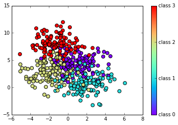
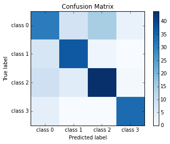

Source available on Nbviewer.
A random forest is a meta estimator that fits a number of decision tree classifiers on various sub-samples of the dataset and use averaging to improve the predictive accuracy and control over-fitting.
%matplotlib inline
import numpy as np
np.random.seed(0)
import matplotlib.pyplot as plt
from sklearn.datasets import make_blobs
from sklearn import cross_validation
from sklearn.metrics import confusion_matrix
from sklearn.tree import DecisionTreeClassifier
Creating random Data
# Define some two-dimensional labeled data
X, y = make_blobs(n_samples=500, centers=4,
random_state=0, cluster_std=1.5)
# Plot data X vs X, group by y
target_names = ['class 0', 'class 1', 'class 2', 'class 3']
plt.scatter(X[:,0], X[:,1], c=y, s=50, cmap="rainbow")
plt.colorbar(ticks=np.arange(4), format=plt.FuncFormatter(lambda i, *args: "class " + str(i)))

# Create training and testing set (60%-40%)
X_train, X_test, y_train, y_test = cross_validation.train_test_split(X, y, test_size=0.4)
Fitting the prediction model
# Fit the model
clf = DecisionTreeClassifier()
clf.fit(X_train,y_train)
DecisionTreeClassifier(compute_importances=None, criterion='gini',
max_depth=None, max_features=None, max_leaf_nodes=None,
min_density=None, min_samples_leaf=1, min_samples_split=2,
random_state=None, splitter='best')
Doing predictions
# Predict outcomes from test set
pred = clf.predict(X_test)
pred
array([3, 0, 0, 2, 2, 0, 3, 2, 0, 1, 2, 2, 3, 2, 3, 1, 2, 2, 3, 2, 0, 0, 0,
0, 1, 0, 1, 2, 1, 2, 0, 2, 3, 2, 0, 2, 2, 0, 1, 3, 1, 0, 0, 1, 2, 1,
1, 1, 2, 1, 1, 1, 1, 2, 2, 0, 2, 2, 2, 0, 0, 2, 2, 0, 3, 1, 2, 1, 3,
2, 1, 2, 3, 2, 3, 0, 1, 3, 3, 3, 1, 2, 3, 3, 1, 0, 0, 1, 0, 3, 0, 1,
0, 3, 3, 2, 2, 2, 1, 2, 1, 2, 1, 0, 0, 0, 2, 0, 2, 2, 1, 2, 1, 0, 2,
0, 2, 1, 2, 2, 3, 1, 0, 0, 0, 1, 1, 3, 3, 2, 0, 2, 3, 0, 3, 0, 1, 2,
2, 2, 2, 2, 3, 1, 1, 0, 2, 0, 3, 0, 1, 3, 3, 2, 0, 2, 0, 0, 2, 0, 0,
0, 1, 3, 0, 0, 3, 0, 0, 2, 2, 1, 3, 1, 1, 2, 0, 3, 0, 0, 1, 2, 2, 0,
1, 1, 3, 0, 0, 3, 0, 2, 3, 0, 3, 3, 1, 1, 3, 1])
Evaluating the model
# Compute confusion matrix
cm = confusion_matrix(pred, y_test)
print cm
# Plot confusion matrix
plt.imshow(cm, interpolation='nearest', cmap=plt.cm.Blues)
plt.xticks(y_val, target_names)
plt.yticks(y_val, target_names)
plt.colorbar()
plt.title('Confusion Matrix')
plt.ylabel('True label')
plt.xlabel('Predicted label')
[[31 8 15 3]
[ 7 37 2 0]
[ 9 5 44 1]
[ 4 0 0 34]]

clf.score(X_test, y_test)
0.72999999999999998
from sklearn.metrics import accuracy_score
accuracy_score(y_test, pred)
0.72999999999999998
from sklearn.metrics import classification_report
print(classification_report(y_test, pred, target_names=target_names))
precision recall f1-score support
class 0 0.54 0.61 0.57 51
class 1 0.80 0.74 0.77 50
class 2 0.75 0.72 0.73 61
class 3 0.89 0.89 0.89 38
avg / total 0.74 0.73 0.73 200
#plt.scatter(X[:,0], X[:,1], c=y, zorder=10, cmap=plt.cm.Paired)
#plt.scatter(X_test[:, 0], X_test[:, 1], c=y, s=80, facecolors='none', zorder=10)
# Plot th prediction results from test set
plt.scatter(X_test[:,0], X_test[:,1], c=pred, s=50, cmap="rainbow")
# Circle out the incorrect predictions
X_wrong = X_test[pred != y_test,:]
plt.scatter(X_wrong[:,0], X_wrong[:,1], s=150, facecolors='none', zorder=10)
h = 100
x_min, x_max = X[:, 0].min() - .1, X[:, 0].max() + .1
y_min, y_max = X[:, 1].min() - .1, X[:, 1].max() + .1
xx, yy = np.meshgrid(np.linspace(x_min, x_max, h),
np.linspace(y_min, y_max, h))
Z = clf.predict(np.c_[xx.ravel(), yy.ravel()])
Z = Z.reshape(xx.shape)
plt.pcolormesh(xx, yy, Z, cmap="rainbow", alpha=0.3)
plt.scatter(X_test[:,0], X_test[:,1], c=y_test, s=50)
plt.axis('tight')